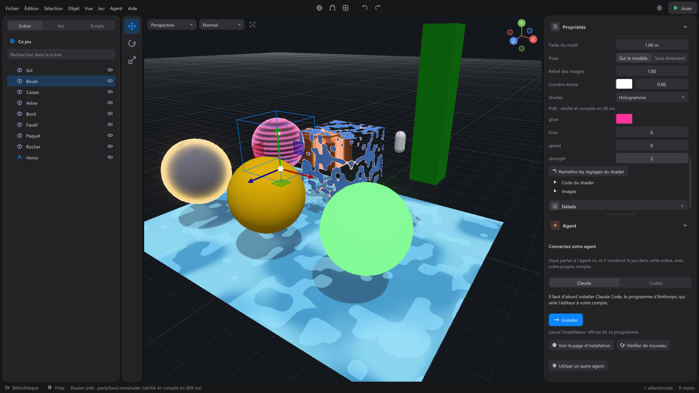

Les shaders¶
Un shader dit à la carte graphique de quoi a l'air une surface. Un matériau règle des valeurs (couleur, rugosité, métal, images, lueur) ; un shader va plus loin : un hologramme qui défile, un objet qui se dissout en braises, de la lave qui coule, un bord lumineux, un arbre qui bouge au vent, une eau de dessin animé.
Un shader se pose sur un matériau : tous les objets qui portent ce matériau le montrent. Il ne change que la surface (couleur, relief, rugosité, métal, lumière émise, trous découpés) et, s'il le veut, la place des sommets. L'éclairage, les ombres, la transparence et l'anticrénelage restent au moteur : un shader ne peut pas les casser.

Poser une recette¶
Sélectionnez un objet qui porte un matériau du projet. Dans la section Matériau, sous Lumière émise, la liste Shader propose les shaders du projet et les Recettes livrées avec WorldMint :
| Recette | Ce qu'elle fait |
|---|---|
| Hologramme | Des lignes qui défilent et un bord lumineux, sur une surface presque noire. |
| Dissolution | L'objet disparaît par taches, bordé de braises ; son ombre suit. |
| Vent dans le feuillage | Le haut du modèle se balance, son pied reste en place (arbres, buissons, herbes hautes). |
| Contour lumineux | Le bord de l'objet brille, comme un objet magique ou à ramasser. |
| Eau stylisée | Une eau opaque aux couleurs franches, des reflets en taches et de petites vagues. |
| Lave | Une roche sombre parcourue de veines brûlantes, qui coulent lentement. |
| Clignotement | La surface s'allume et s'éteint, comme un voyant. |
Choisir une recette la copie dans le dossier shaders/ du projet : c'est désormais votre shader. Ses réglages apparaissent juste en dessous, en curseurs (une couleur, une vitesse, une force...). Ils ne changent que ce matériau : deux matériaux peuvent porter le même shader avec des couleurs différentes. Remettre les réglages du shader rend à chacun la valeur que le code lui donne.

Modifier le code¶
Le code d'un shader est un petit fichier texte, shaders/<nom>.wmshader. Deux façons de le modifier :
- Code du shader, dans le panneau du matériau : tapez, et le shader est vérifié et recompilé dès que vous vous arrêtez. La vue montre le résultat aussitôt.
- Ouvrir le fichier : il s'ouvre dans votre éditeur de texte. À chaque enregistrement, WorldMint le relit et le recompile.
Un shader s'écrit en GLSL, encadré :
// Hologramme : la première ligne décrit le shader.
param color glow = vec3(0.2, 0.8, 1.0); // un réglage : une pastille de couleur
param float speed = 2.0 range(0, 10); // un curseur, de 0 à 10
void surface(inout Surface s, Inputs i) {
float line = step(0.5, fract(i.position.y * 8.0 - i.time * speed));
s.color = glow * 0.08;
s.emission = glow * (fresnel(i.normal, i.toCamera, 3.0) + line * 0.25);
}
void vertex(inout vec3 position, VertexInputs v) { // facultatif : déplace les sommets
position.y += 0.05 * sin(v.time * 3.0 + position.x);
}
Ce que le shader change (Surface s) |
Ce qu'il lit (Inputs i) |
|---|---|
color : la couleur de base, de 0 à 1 |
position : le point, dans le monde |
roughness : 0 lisse, 1 mat |
normal : la normale du modèle |
metallic : 0 ou 1 |
uv : les coordonnées de texture |
emission : la lumière émise |
time : le temps du jeu, en secondes (les pauses ne comptent pas) |
opacity : sous 0,5, le point disparaît |
toCamera : la direction de la caméra |
normal : le relief, dans le monde |
tint : la couleur de l'objet |
Les sommets lisent local (le sommet dans le modèle), normal, uv et time, et déplacent position (dans le monde). La bibliothèque : noise (un bruit doux de 0 à 1), fresnel (le bord vu de face), quality() (0 en qualité Basse, 1 Moyenne, 2 Haute : un shader coûteux se simplifie en Basse). Huit réglages au plus : float, vec2, vec3, vec4, ou color.
Les blocs reliés¶
Sans écrire de code, un shader se construit avec des blocs reliés : chaque bloc fait une chose simple (lire le temps, faire du bruit, mélanger deux couleurs, faire briller le bord), et on les relie comme des tuyaux, jusqu'au bloc Sortie, qui reçoit ce que le shader change : la couleur, la lumière émise, la rugosité, le métal, l'opacité, le relief, et le déplacement des sommets. Le fichier est shaders/<nom>.wmgraph.
- Commencer : dans la liste Shader du matériau, choisissez Nouveau shader en blocs, ou une recette en blocs (chacune des sept recettes existe en code et en blocs, avec les mêmes réglages et la même image). Ouvrir les blocs ouvre la fenêtre Blocs du shader, sur le bas de la vue : l'objet reste visible au-dessus, et la sphère du matériau dans les propriétés.
- Ajouter un bloc : le bouton Ajouter un bloc, ou un clic droit sur le fond. Les blocs sont rangés par familles (Entrées, Valeurs et réglages, Calcul, Motifs et effets, Vecteurs et couleurs), avec une recherche ; survolez un bloc pour lire ce qu'il fait.
- Relier : tirez du rond à droite d'un bloc (son Résultat) jusqu'au rond à gauche d'un autre (une de ses entrées). Lâcher une flèche dans le vide ouvre le menu : le bloc choisi est déjà relié. Une entrée libre prend la petite valeur réglée à côté d'elle.
- Déplacer, supprimer : glissez un bloc par son titre ; sa place est enregistrée dans le fichier. Cliquez un bloc ou un lien, puis Suppr. Clic droit glissé pour déplacer le fond. Ctrl+Z et Ctrl+Y défont et refont, la souris sur la fenêtre.
- Les réglages : un bloc Réglage (un nombre, avec son nom, sa valeur, son minimum et son maximum) ou Réglage de couleur devient un curseur du matériau, comme un
paramdans le code. - L'aperçu : chaque changement est vérifié et compilé 0,3 s plus tard, et la vue le montre aussitôt.
- Voir le code montre le code que donnent les blocs, en lecture seule : on le change par les blocs.

Un lien qui ne va pas (une boucle, deux tailles différentes, un bloc de la surface relié au déplacement des sommets) est refusé : le bloc fautif devient rouge, avec son message, et l'objet garde la dernière version qui marchait.

Quand le code est refusé¶
Un shader est vérifié en trois étapes avant de s'afficher : le texte (rien de ce que le moteur garde pour lui : pas de #, pas de ressource, pas de while, des boucles de 64 tours au plus), une compilation dans un « bac à sable » qui ne connaît que le contrat ci-dessus, puis la compilation dans le vrai shader du moteur. Si l'une refuse :
- le panneau dit pourquoi, et à quelle ligne (« ligne 4 : erreur d'écriture, à cette ligne ou à la fin de la précédente ») ; la console et la barre d'état aussi ;
- les objets gardent la dernière version qui marchait, ou leur matériau de base s'il n'y en a pas encore : rien ne disparaît, rien ne devient rose.
Après le shader, le moteur remplace toute valeur non finie (une division par zéro) par celle du matériau, et borne tout le reste : un shader faux ne fait jamais une tache noire ni ne casse l'image.
Avec l'agent¶
L'agent connaît les recettes et le contrat. Demandez-lui « fais briller ce coffre », « que les arbres bougent au vent » ou « une eau de dessin animé pour la mare » : il pose une recette sur le matériau et règle ses curseurs, ou écrit un shader, en code ou en blocs (il lit et change le graphe que vous voyez dans la fenêtre des blocs). Il reçoit les mêmes messages que vous, à la ligne, et corrige avant de dire que c'est fait. Il ne modifie jamais un shader venu d'un pack : il le copie dans shaders/.
Sécurité, jeu exporté, performance¶
- Un shader venu d'un pack téléchargé est recompilé depuis son texte, dans un processus à part : un texte piégé ne peut pas faire planter l'éditeur.
- Le jeu exporté ne compile rien : l'éditeur range les versions compilées dans le projet, et l'export les emporte. Un shader refusé, le jeu dessine le matériau sans lui.
- Vérifier et compiler un shader prend 5 à 7 ms ; la carte graphique prépare ensuite son pipeline (de l'ordre de 0,1 à 0,5 s la toute première fois, quelques millisecondes ensuite), à part : l'éditeur ne se fige pas, l'objet garde la version d'avant le temps qu'elle soit prête.